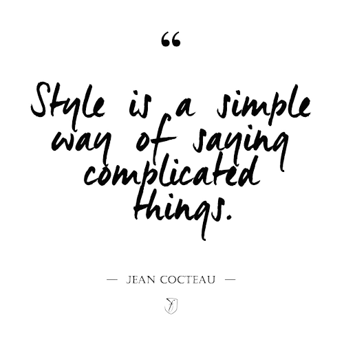
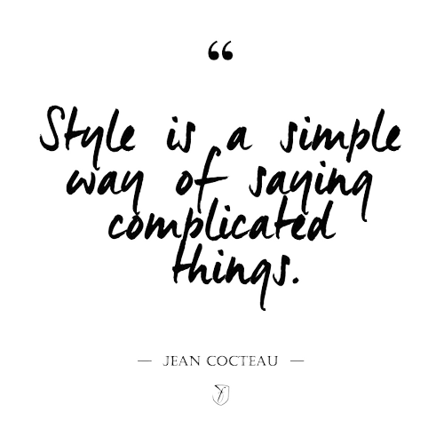

RECUZE
RevolutionisingFashion.



The global fashion industry produces more than 100 billion pieces of clothing every year.Only a fraction of those clothes is recycled.Most end up in landfills,where they take centuries to decompose.We here at RECUZE recycle fabrics to reduce textile waste and preserve resources.
To create flourishing ecosystems and communities through our activity.Our movement believes that we ought to place environmental, social, and ethical improvements on management's agenda.This may include: increasing the value of local production and products; prolonging the lifecycle of materials; increasing the value of timeless garments; reducing the amount of waste; and reducing the harm to the environment as a result of production and consumption.
We use biodegradable materials which open doors for recycling and repurposing items.We reduce waste production by optimizing our inventory management methods.
Good quality clothing is sent to charity institutions and is used as second hand clothing. Unwearable textiles are considered as damaged textiles, and are processed in the factory as rags. Rags are collected and sent to the wiping and flocking industry. Other materials will be sent for fibre reclamation and stuffing. Fibres from the old fabrics are reclaimed and are used for making new garments. Threads from the fabric is pulled out and used for re-weaving new garments or blankets.
© 2023 RECUZE.